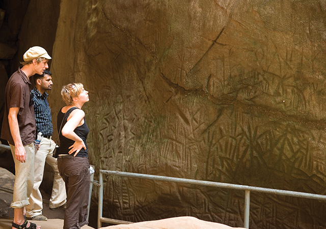
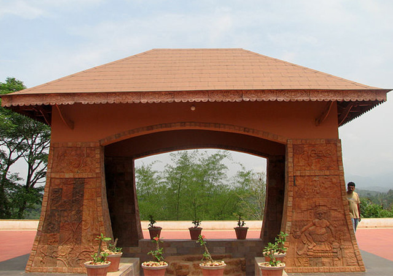
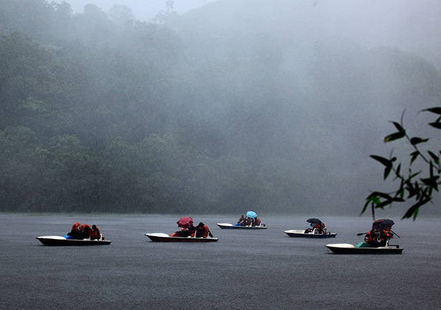
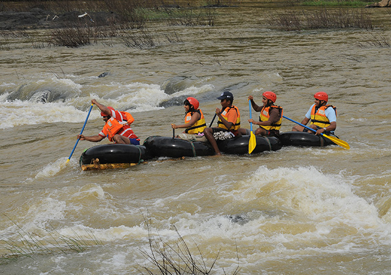
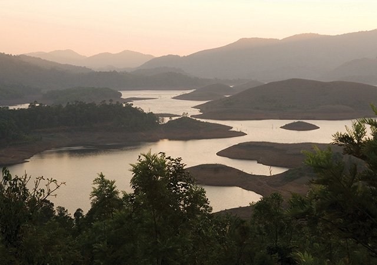

Replete with waterfalls, historical caves, comfortable resorts and homestays, Wayanad in Kerala is famous for its spice plantations and wildlife. Walking through the sprawling spice plantations, trekking to the pre-historic caves and experiencing a resort holiday are one of the many things you can do to get a taste of Wayanad.Wayanad homes a wide variety of wildlife like elephants, leopards, and bears. Wayanad is a perfect weekend idea from the cities of South India. If taking a road trip from Bangalore, you will drive through three national parks: Nagarhole, Bandipur and Mudumalai.
1.Edakkal Caves
If you don’t mind walking a bit, then gather your kids and walk up to this pre-historic rock shelter. Edakkal means “stone in between”, so here you have three huge boulders where one rests in between, while one of them serves as a roof. The rock engravings are a major highlight of this place.

2.Pazhassi Memorial
The brave and courageous Kerala Varma Pazhassi Raja was a king of Kottayam dynasty who fought the British in the 18th century. His unique guerrilla warfare had the British scrambling for cover. Finally, British killed him through stealth means. You can see his tomb here at Manandavady, near Kalpetta.

3.Pookot Lake
Pookot Lake in Wayanad is one of the most beautiful lakes in Kerala surrounded and enveloped by rich, evergreen forests. If you are lucky, you can see groups of blue water lily flowers floating here and there. Boating is allowed here. Other attractions include spices emporium, children’s park, fresh water aquarium and handicrafts.

4.Kuruva Dweep
A beautiful 950-acre island located 14 kilometers from Mananthavady called Kuruva Dweep attracts people all year through. It is located in the middle of Kabani River and are actually groups of islets formed into a massive place where you can observe mighty trees bowing down to the river while it gurgles by. It is truly a place of peace, greenery and enchantment.You can even see some rare kinds of flora here, including herbs.

5.Banasurasagar Dam
Banasurasagar dam is the biggest earth dam in India and it is a truly a spectacular sight with magnificent hills as backdrop.
